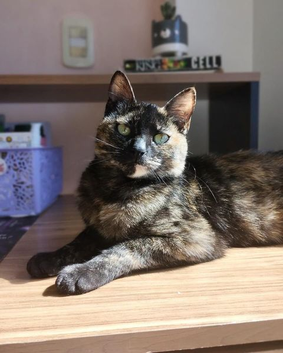
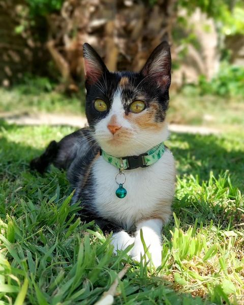
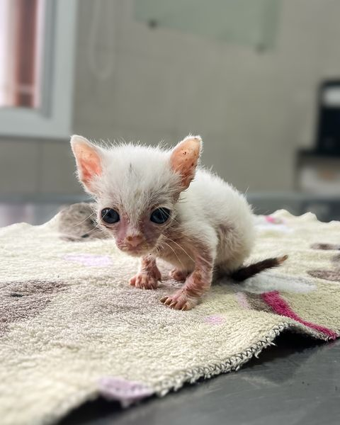
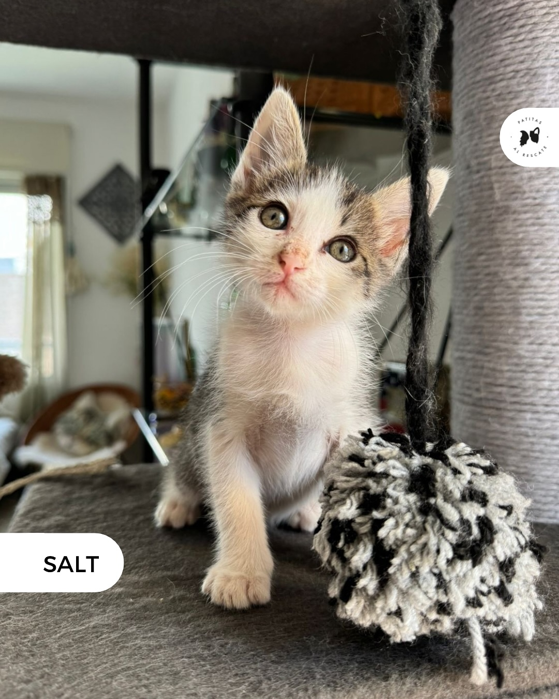
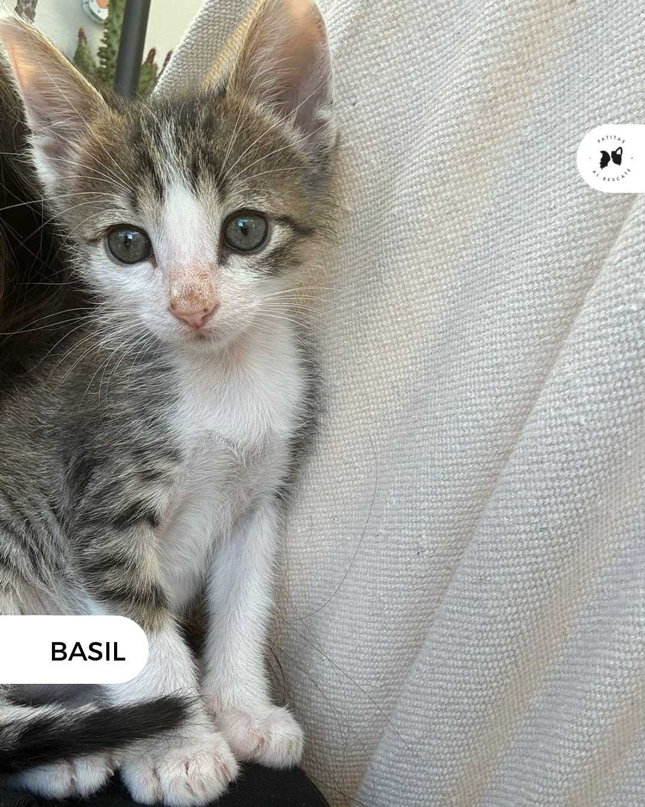
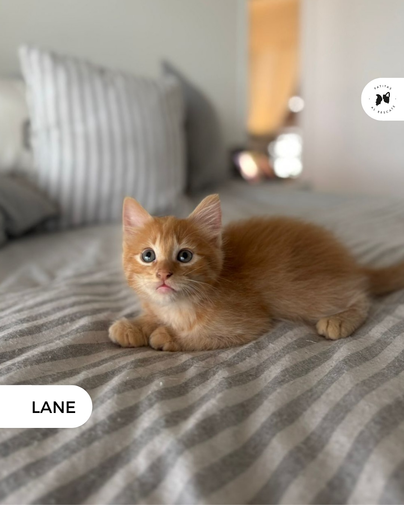
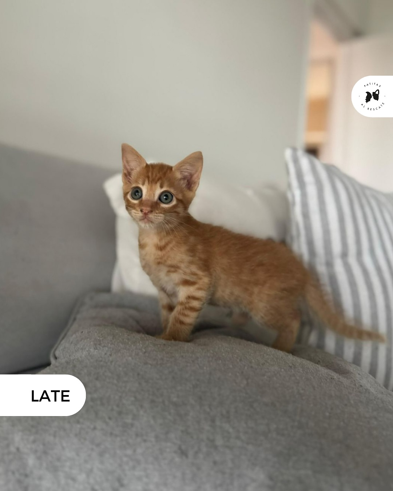
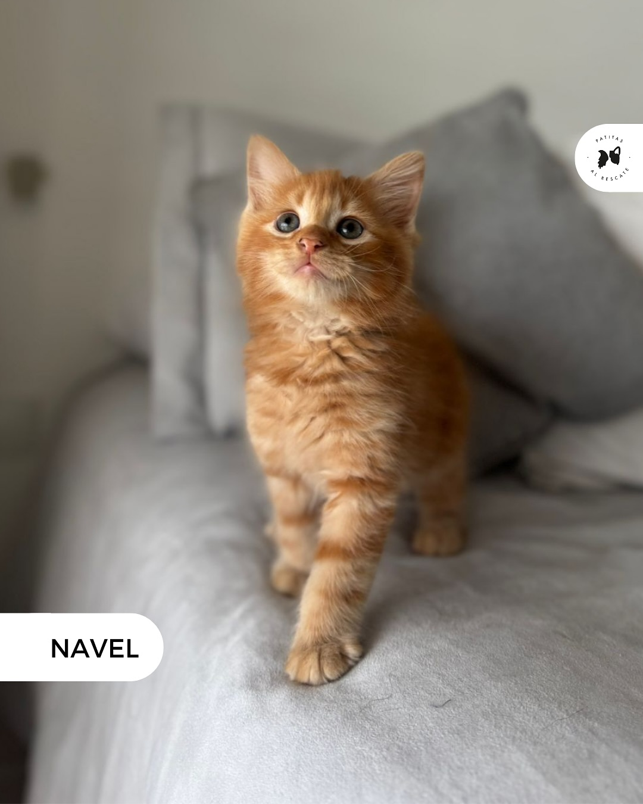
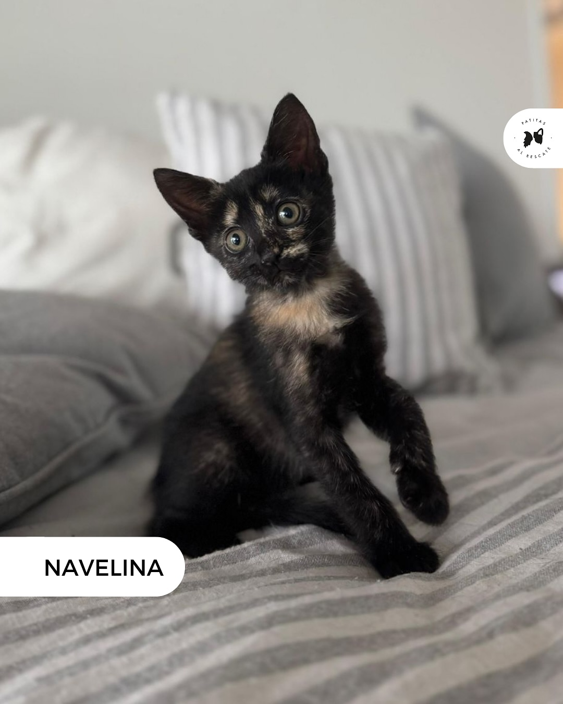

Atina. Hembra de 9 meses.
Patitas Al Rescate

Brava. Hembra de aproximadamenete 2 años.
Patitas Al Rescate

Pepper. Macho de aproximadamenete 2 meses.
Patitas Al Rescate

Salt. Hembra de aproximadamente 2 meses.
Patitas Al Rescate

Basil. Macho de aproximadamenete 2 meses.
Patitas Al Rescate

Lane. Macho de aproximadamenete 3 meses.
Patitas Al Rescate

Late. Macho de aproximadamenete 3 meses.
Patitas Al Rescate

Navel. Macho de aproximadamenete 3 meses.
Patitas Al Rescate

Navelina. Hembra de aproximadamenete 3 meses.
Patitas Al Rescate